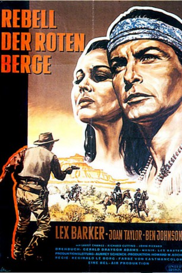
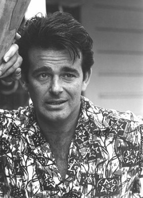
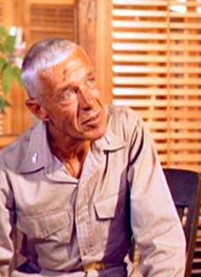

#3405 Rebell der Roten Berge
Alternativ: War Drums
 
 IMDB-Wertung: 5.8 / 10
IMDB-Wertung: 5.8 / 10  Metascore: 0
Metascore: 0 
Gutgläubig schließen die Apachen-Indianer mit den Weißen einen Friedensvertrag ab. Als sich Häuptling Mangas gegen eindringende Goldsucher verteidigt, wertet das die Kavallerie als Aufstand. Es kommt zum Krieg… Der spätere „Old Shatterhand“-Darsteller Lex Barker spielt eine Rolle, die „Winnetou“ ähnelt.
Jahr: 1957
Dauer: 72 Minuten
FSK: 12
Land: USA Studio: United ArtistsTonspuren: DD2.0 - ,
Untertitel:
Auflösung: 1080p (1440x1080) Größe: 3891 MB
Genre: Action, Drama, Western, Liebe
Regisseur: Reginald Le Borg
Drehbuch: Gerald Drayson Adams
Soundtrack: Les Baxter
Darsteller:
 Lex Barker als Mangas Coloradas
Lex Barker als Mangas Coloradas- Joan Taylor als Riva
 Ben Johnson als Luke Fargo
Ben Johnson als Luke Fargo- Larry Chance als Ponce
 John Pickard als Sheriff Bullard
John Pickard als Sheriff Bullard John Colicos als Chino
John Colicos als Chino- Jeanne Carmen als Yellow Moon
-  Stuart Whitman als Johnny Smith , uncredited
-  Richard H. Cutting als Judge Benton
- James Parnell als Arizona
- Tom Monroe als Dutch Herman
- Jil Jarmyn als Nona
- Mauritz Hugo als Clay Staub
- Ward Ellis als Delgadito
- Jack Hupp als Lt. Roberts
- Paul Fierro als Fiero , uncredited
- Alex Montoya als Manuel , uncredited
- Boyd 'Red' Morgan als Trooper Teal , uncredited
- Barbara Parry als Mary Smith , uncredited
- Fred Sherman als Dr. Gordon , uncredited
Datei: X:\HD-Western-1900-1959\Rebell der Roten Berge (1957, FSK12, 1440x1080).mkv seit 01.04.2016
Festplatte: HD Eastern+Western
 Es gibt insgesamt 98 Filme in der Gruppe 'HD-Western-1900-1959'
Es gibt insgesamt 98 Filme in der Gruppe 'HD-Western-1900-1959'